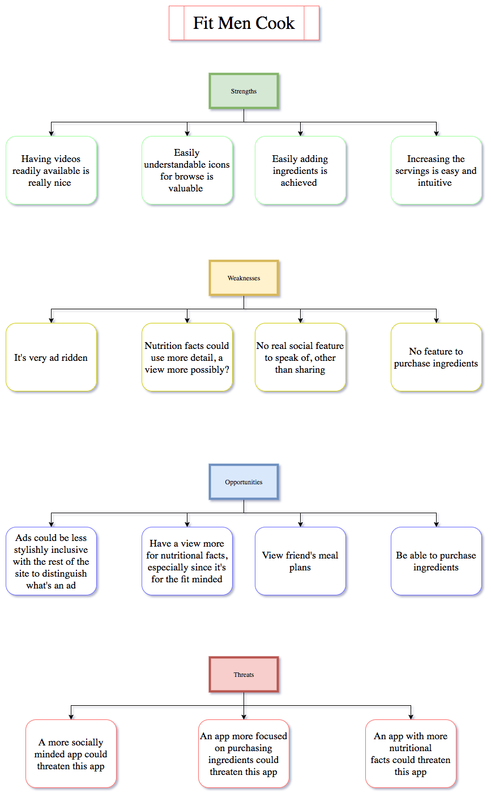

.png)

PalATE is a recipe application that allows users to search for recipes by categories. When they find a recipe they like they can favorite it and access it in their favorites later. From the recipe they can click to have ingredients added to their grocery list or they can add the ingredients manually as well. Users can also submit their own recipes for consideration.
I was brought onto the team to research, design, and test the app. The first thing I did was conduct SWOT analyses of two competitor recipe apps: Yummly, and Fit Men Cook. I wanted to ensure our visual design would be cutting edge.As part of the research phase, I also sent out a survey to 30 participants to learn a little more about what users were wanting in a recipe app.
I implemented the Android's material design guidelines for the design and as a result, there wasn’t as much freedom for creativity in icons, and layouts, but I used images and the color red (associated with food) to stand out and give PalATE a distinct flavor among other recipe apps on the market.
The original sketch did include the 4 categories (breakfast, lunch, dinner, snacks) but it did not include a search feature. However, the survey informed me that 80% of users go onto an app looking for something specific and only 20% are there to browse. I added the search icon to allow users to type in key words to narrow their search instead of having to endure an infinite scroll.

The survey also informed me that users don’t see the point in going to a recipe app if they cannot save or favorite a recipe for later use. I made sure to include a way to favorite recipes by adding a heart icon.

Per my user research, and the SWOT analyses I conducted of competitors, I knew that I needed to include a grocery list feature as well. 90% of users that filled out my survey said the grocery list is a valuable feature they look for in a recipe app.
Originally, I designed the app without the ability to add ingredients to a grocery list directly from the favorited recipe. Users complained about having to remember the whole ingredient list to type it manually though. I added a button to a favorited recipe that would allow the user to quickly add ingredients from the recipe straight to their list. If they go to their list they can then edit any of the ingredients if they need to.
It was important to have a setting that would allow users to input their locations so I could showcase the proper units of measurement. Language was also important since I wanted this app to be available to anyone, anywhere.
My research also informed the decision to add a feature that allows users to submit their own recipes for consideration. Users tend to feel more loyalty toward something when they are not just taking from it but they are also contributing.
This project allowed me to explore Android's material design guidelines more thoroughly as well as what users look for in recipe apps! In the end, I was able to design an app that makes life easier for users in the kitchen, whether they are fanatical foodies or casual cookers.